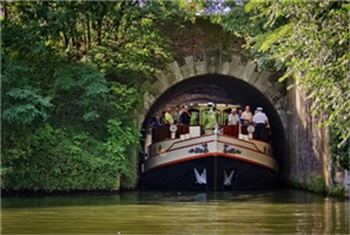
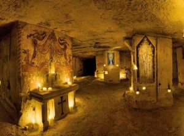

Boottocht

Bij Rederij Stiphout kun je kiezen uit een heleboel verschillende rondvaarten, elk met hun eigen unieke thema, en leuk voor de hele familie.
Je kunt bijvoorbeeld kiezen voor een boottocht van Maastricht naar Luik en weer terug,
of een 4 Sluizentocht, waarbij je door verschillende sluizen vaart.
Of je kunt kiezen voor een boottocht in combinatie met heerlijk eten, zoals bijvoorbeeld de Pannenkoekenboottocht!
Ook kan je een boottocht combineren met een bezoek aan de Limburgse grotten.
Grotten

In een labyrint van meer dan 20.000 gangen neemt een professionele gids je mee ondergronds in het 80 kilometer lange grottenstelsel Noord.
Unieke bezienswaardigheden zijn de koepel, de schuilplek van de bewoners van Sint Pieter en de kluis.
Deze gangen zijn ontstaan door mergelwinning die hier 700 jaar geleden heeft plaatsgevonden.
Door de jaren heen heeft ieder deel van de geschiedenis z’n sporen in de grotten achtergelaten en juist dat maakt ze zo interessant.
Een bijzonder stukje Maastricht.